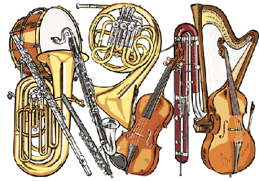

Musical instruments are easily recognized. Can you group them into their correct category?
Group the ten instruments into the correct categories list below.
Musical instruments are easily recognized. Can you group them into their correct category?
Musical Instruments can be categorized in four groups.
